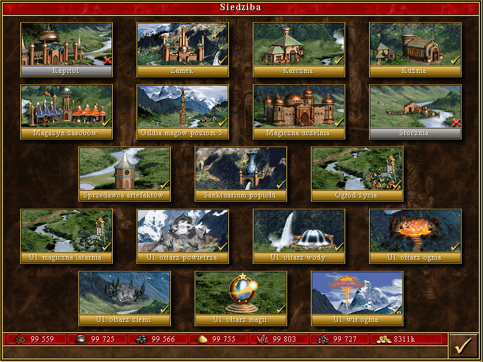

Trzecie miasto, które debiutuje w Heroes III i drugie, które się pojawia tylko w tej części. Jest swoistym wymieszaniem neutralnych żywiołaków i zamku Czarodziejki z Heroes I-II - stąd rusałki, feniksy i baśniowe, zielone klimaty. Pojawia się w dodatku Ostrze Armagedonu, choć pierwotnie miało wyjść dopiero w The Shadow of Death (w pierwszym dodatku miało się pojawić wycofane The Heavenly Forge - Niebiańska Kuźnia). Wrota Żywiołów pojawiają się dosłownie znikąd na czas trwania kampanii Ostrze Armagedonu - ku zaskoczeniu samych bohaterów - a po zakończeniu wojny znikają. Mimo to wątek żywiołaków zostaje rozwinięty w Might and Magic VIII oraz Heroes Chronicles: Władcy Żywiołów, gdzie okazuje się, że żywioły to przepotężne i pradawne siły, biorące udział w powstawaniu świata, porównywalne do samych Starożytnych. Wrota Żywiołów to miasto, które sprawia, że jak dotąd Heroes III miało najwięcej frakcji, bo aż 9.
Wśród jednostek można zauważyć znane nam już żywiołaki, jednak tym razem wraz z ulepszonymi formami. W początkowym etapie rozgrywki, gracz powinien skupić się na ulepszeniu Ołtarzu powietrza i wody. Dzięki temu zyska dwie, niezwykle silne jednostki strzelające. Żywiołaki burzy i lodu wspomagane błogosławieństwem potrafią naprawdę wiele zdziałać. Dodatkowym atutem tego miasta jest podwójny przyrost ognistych ptaków i feniksów. Co tydzień będzie można zaciągnąć do armii cztery takie istoty, co przy innych jednostkach ostatniego poziomu robi znaczącą różnicę. Wojsko jest bardzo zróżnicowane. Doskonale spisuje się w natarciu jak i w obronie. Do dyspozycji gracza jest także ciekawy budynek pozwalający nauczyć się wszystkich rodzajów magii, oczywiście za odpowiednią opłatą. Tutejsze Sanktuarium Graala jest przez wielu uważane za najpotężniejsze. Sprawia ono, że pięciopoziomowa Gildia Magów oferuje nam wszystkie czary dostępne w grze. Miasto posiada jednak swoje minusy. Żywiołaki ognia i ziemi nie spełniają oczekiwań. Rozbudowa Wrót żywiołów także sporo kosztuje. Wymagane są wszystkie surowce aczkolwiek pamiętać trzeba przede wszystkim o rtęci. Miasto to sprawdzi się na mapach każdego rozmiaru.
[Źródło tekstu]
